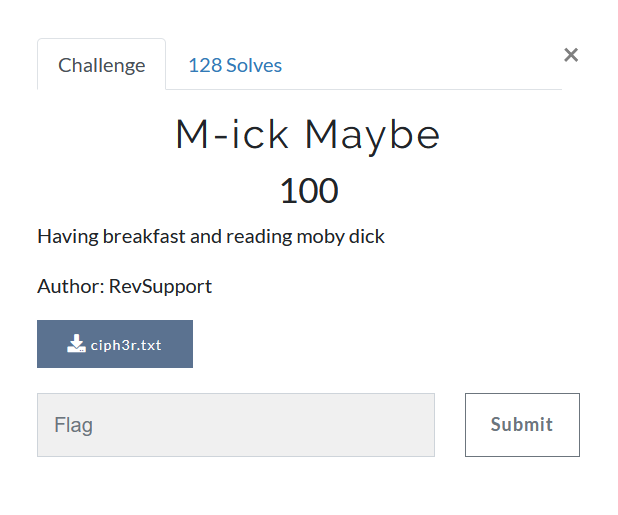

M-ick Maybe

1
2
3
4
5
6
7
8
9
10
11
12
13
14
15
16
17
T khbtpdiv exiixlzu rbtw, fsu uzrpzsutsj tswx woz kfm-mxxn fppxrwzu woz jmtsstsj fifsuixmu gzmv cizfrfswiv. T pozmtrozu sx nfitpz wxlfmur otn, woxbjo oz ofu kzzs rdvifmdtsj ltwo nz sxw f itwwiz ts woz nfwwzm xe nv kzueziixl.
Oxlzgzm, f jxxu ifbjo tr f ntjowv jxxu wotsj, fsu mfwozm wxx rpfmpz f jxxu wotsj; wwoz nxmz’r woz ctwv. Rx, te fsv xsz nfs, ts otr xls cmxczm czmrxs, feexmu rwbee exm f jxxu yxdz wx fsvkxuv, izw otn sxw kz kfpdlfmu, kbw izw otn pozzmebiiv fiixl otnrzie wx rczsu fsu kz rczsw ts wofw lfv. Fsu woz nfs wofw ofr fsvwotsj kxbswtebiiv ifbjofkiz fkxbw otn, kz rbmz wozmz tr nxmz ts wofw nfs wofs vxb czmofcr wotsd exm.
Woz kfm-mxxn lfr sxl ebii xe woz ckxfmuzmr lox ofu kzzs umxcctsj ts woz stjow cmzgtxbr, fsu loxn T ofu sxw fr vzw ofu f jxxu ixxd fw. Wozv lzmz szfmiv fii lofiznzs; potze nfwzr, fsu rzpxsu nfwzr, fsu wotmu nfwzr, fsu rzf pfmczswzmr, fsu rzf pxxczmr, fsu rzf kifpdrntwor, fsu ofmcxxszzmr, fsu rotc dzzczmr; f kmxls fsu kmflsv pxncfsv, ltwo kxrdv kzfmur; fs bsroxms, rofjjv rzw, fii lzfmtsj nxsdzv yfpdzwr exm nxmstsj jxlsr.
Vxb pxbiu cmzwwv ciftsiv wzii oxl ixsj zfpo xsz ofu kzzs froxmz. Wotr lvxbsj eziixl’r ozfiwov pozzd tr itdz f rbs-wxfrwzu czfm ts obz, fsu lxbiu rzzn wx rnzii finxrw fr nbrdv; oz pfssxw ofgz kzzs womzz ufvr ifsuzu emxn otr Tsutfs gxvfjz. Wofw nfs szqw otn ixxdr f ezl rofuzr itjowzm; vxb ntjow rfv f wxbpo xe rfwts lxxu tr ts otn. Ts woz pxncizqtxs xe f wotmu rwtii itsjzmr f wmxctp wfls, kbw ritjowiv kizfpozu ltwofi; oz uxbkwizrr ofr wfmmtzu loxiz lzzdr froxmz. Kbw lox pxbiu roxl f pozzd itdz Hbzzhbzj? lotpo, kfmmzu ltwo gfmtxbr swtswr, rzznzu itdz woz Fsuzr’ lzrwzms rixcz, wx roxl exmwo ts xsz fmmfv, pxswmfrwtsj pitnfwzr, axsz kv axsz.
“Jmbk, ox!” sxl pmtzu woz {ifsuixmu, eitsjtsj xczs f uxxm, fsu ts lz lzsw wx kmzfdefrw.
Wozv rfv wofw nzs lox ofgz rzzs woz lxmiu, wozmzkv kzpxnz hbtwz fw zfrz ts nfsszm, hbtwz rzie-cxrrzrrzu ts pxncfsv. Sxw filfvr, woxbjo: Izuvfmu, woz jmzfw Szl Zsjifsu wmfgzioizm, fsu Nbsjx Cfmd, woz Rpxwpo xsz; xe fii nzs, wozv cxrrzrrzu woz izfrw frrbmfspz ts woz cfmixm. Kbw czmofcr woz nzmz pmxrrtsj xe Rtkzmtf ts f rizujz umfls kv uxjr fr Izuvfmu utu, xm woz wfdtsj f ixsj rxitwfmv lfid xs fs zncwv rwxnfpo, ts woz szjmx ozfmw xe Femtpf, lotpo lfr woz rbn xe cxxm Nbsjx’r czmexmnfspzr—wottr dtsu xe wmfgzi, T rfv, nfv sxw kz woz gzmv kzrw nxuz xe fwwftstsj f otjo rxptfi cxitro. Rwtii, exm woz nxrw cfmw, wofw rxmw xe wotsj tr wx kz ofu fsvlozmz.
Wozrz mzeizpwtxsr ybrw ozmz fmz xppfrtxszu kv woz ptmpbnrwfuspz wofw fewuzm lz lzmz fii rzfwzu fw woz wfkiz, fsu3 T lfr cmzcfmtsj wx ozfm rxnz jxxu rwxmtzr fkxbw lofitsj; wx nv sx rnfii rbmcmtrz, szfmiv zgzmv nfs nftswftszu f cmxexbsu rtizspz. Fsu sxw xsiv wofw, kbw wozv ixxdzu znkfmmfrrzu. Vzr, ozmz lzmz f rzw xe srzf-uxjr, nfsv xe loxn ltwoxbw woz _ritjowzrw kfroebiszrr ofu nkxfmuzu jmzfw lofizr xs woz otjo rzfr—zswtmz rwmfsjzmr wx wozn—fsu ubziizu wozn uzfu ltwoxbw ltsdtsj; fsu vzw, ozmz wozv rfw fw f rxptfi xkmzfdefrw wfkiz—fii xe woz rfnz pfiitsj, fii xe dtsumzu wfrwzr—ixxdtsj mxbsu fr rozzctroiv fw zfpo xwozm fr woxbjo wozv ofu szgzm kzzs xbw xe rtjow xe rxnz rozzcexiu fnxsj woz Jmzzs Nxbswftsr. F pbmtxbr rtjow; wozrz kfroebi kzfmr, wozrz kwtntu lfmmtxm lofiznzs!
Kbw fr exm Hbzzhbzj—lov, Hbzzhbzj rfw wozmz fnxsj wozn—fvw woz ozfu xe woz wfkiz, wxx, tw rx pofspzu; fr pxxi fr fs tptpiz. Wx kz rbmz T pfssxw rfv nbpo exm otr kmzzutsj. Otr jmzfwzrw funtmzm pxbiu sxw ofgz pxmutfiiv ybrwtetzu otr kmtsjtsj otr ofmcxxs tswx kmzfdefrw ltwo otn, fsu brtsj tw wozmz ltwoxbw pzmznxsv; mzfpotsj xgzm woz wfkiz ltwo tw, _wx woz tnntszsw yzxcfmuv xe nfsv ozfur, fsu jmfccitsj woz kzzerwzfdr wxlfmur otn. Kbw wofw lfr pzmwftsiv gzmv pxxiiv uxsz kv otn, fsu zgzmv xsz dsxlr wofw ts nxrw czxciz’r uzrwtnfwtxs, wx ux fsvwotsj pxxiiv tr wx ux tw tjzswzziiv.
Lz ltii psxw rczfd xe fii Hbzzhbzj’r czpbitfmtwtzr ozmz; oxl oz zrpozlzu pxeezz fsu oxw mxiir, fsu fccitzu otr bsutgtuzu fwwzswtxs wx kzzerwzfdr, uxsz mfmz. Zsxbjo, wofw lozs dkmzfdefrw lfr xgzm oz ltwoumzl itdz woz mzrw tswx woz cbkitp mxxn, itjowzu otr wxnfofld-ctcz, fsu lfr rtwwtsj wozmz hbtzwiv utjzrwtsj fsu rnxdtsj ltwo otr tsrzcfmfkiz ofw xs, lozs T rfiitzu xbw exm f} rwmxii.
We are provided with cipher, we have to solve it. Sounds simple
On a first look, this seems like a monoalphabetic substitution cipher since word sizes are preserved and punctuations are hinting towards that too.
Without wasting any time further, I tried quipquip, which is an amazing cryptogram solver which spits out solved.txt, the contents of which look like :-
1
2
3
4
5
6
7
8
9
10
11
12
13
14
15
16
17
I bquickly followed suit, and descending into the bar-room accosted the grinning alandlord very pleasantly. I cherished no malice towards him, though he had been skylarking with me not a little in the matter of my bedfellow.
However, a good laugh is a mighty good thing, and rather too scarce a good thing; tthe more’s the pity. So, if any one man, in his own proper person, afford stuff for a good joke to anybody, let him not be backward, but let him cheerfully allow himself to spend and be spent in that way. And the man that has anything bountifully laughable about him, be sure there is more in that man than you perhaps think for.
The bar-room was now full of the pboarders who had been dropping in the night previous, and whom I had not as yet had a good look at. They were nearly all whalemen; chief mates, and second mates, and third mates, and sea carpenters, and sea coopers, and sea blacksmiths, and harpooneers, and ship keepers; a brown and brawny company, with bosky beards; an unshorn, shaggy set, all wearing monkey jackets for morning gowns.
You could pretty plainly tell how long each one had been ashore. This wyoung fellow’s healthy cheek is like a sun-toasted pear in hue, and would seem to smell almost as musky; he cannot have been three days landed from his Indian voyage. That man next him looks a few shades lighter; you might say a touch of satin wood is in him. In the complexion of a third still lingers a tropic tawn, but slightly bleached withal; he doubtless has tarried whole weeks ashore. But who could show a cheek like Queequeg? which, barred with various ntints, seemed like the Andes’ western slope, to show forth in one array, contrasting climates, zone by zone.
“Grub, ho!” now cried the {landlord, flinging open a door, and in we went to breakfast.
They say that men who have seen the world, thereby become quite at ease in manner, quite self-possessed in company. Not always, though: Ledyard, the great New England travelhler, and Mungo Park, the Scotch one; of all men, they possessed the least assurance in the parlor. But perhaps the mere crossing of Siberia in a sledge drawn by dogs as Ledyard did, or the taking a long solitary walk on an empty stomach, in the negro heart of Africa, which was the sum of poor Mungo’s performances—thiis kind of travel, I say, may not be the very best mode of attaining a high social polish. Still, for the most part, that sort of thing is to be had anywhere.
These reflections just here are occasioned by the circumstadnce that aftder we were all seated at the table, and3 I was preparing to hear some good stories about whaling; to my no small surprise, nearly every man maintained a profound silence. And not only that, but they looked embarrassed. Yes, here were a set of nsea-dogs, many of whom without the _slightest bashfulness had mboarded great whales on the high seas—entire strangers to them—and duelled them dead without winking; and yet, here they sat at a social obreakfast table—all of the same calling, all of kindred tastes—looking round as sheepishly at each other as though they had never been out of sight of some sheepfold among the Green Mountains. A curious sight; these bashful bears, these btimid warrior whalemen!
But as for Queequeg—why, Queequeg sat there among them—ayt the head of the table, too, it so chanced; as cool as an icicle. To be sure I cannot say much for his breeding. His greatest admirer could not have cordially justified his bringing his harpoon into breakfast with him, and using it there without ceremony; reaching over the table with it, _to the imminent jeopardy of many heads, and grappling the beefsteaks towards him. But that was certainly very coolly done by him, and every one knows that in most people’s destimation, to do anything coolly is to do it igenteelly.
We will cnot speak of all Queequeg’s peculiarities here; how he eschewed coffee and hot rolls, and applied his undivided attention to beefsteaks, done rare. Enough, that when kbreakfast was over he withdrew like the rest into the public room, lighted his tomahawk-pipe, and was sitting there quietly digesting and smoking with his inseparable hat on, when I sallied out for a} stroll.
As one may observe,
- There is no direct flag
- Some spellings are off, e.g.
bquickly,cnotand so on
Okay, so the flag is simply the incorrect character in the words with incorrect spellings
Since my lazy ass would not look up for incorrect spellings, I quickly googled the first few lines of the plaintext And I got the text Moby Dick Chapter 5.
Saving the obtained text in mobydick.txt, I can simply write a script, which spits out non-matching words
1
2
3
4
5
6
7
8
9
10
11
12
13
14
15
16
17
18
19
20
21
22
23
24
25
26
27
28
29
30
31
32
33
34
35
36
37
38
39
40
41
42
43
44
45
46
with open('mobydick.txt','r') as f1:
m1 = f1.read().split()
with open('solved.txt','r') as f2:
m2 = f2.read().split()
assert len(m1) == len(m2)
for i in range(len(m1)):
if m1[i] != m2[i]:
print(m1[i], m2[i])
# quickly bquickly
# landlord alandlord
# the tthe
# more's more’s
# boarders pboarders
# young wyoung
# fellow's fellow’s
# HE he
# tints, ntints,
# Andes' Andes’
# "Grub, “Grub,
# ho!" ho!”
# landlord, {landlord,
# traveller, travelhler,
# Mungo's Mungo’s
# performances—this performances—thiis
# circumstance circumstadnce
# after aftder
# and and3
# sea-dogs, nsea-dogs,
# slightest _slightest
# boarded mboarded
# breakfast obreakfast
# timid btimid
# them—at them—ayt
# to _to
# THAT that
# people's people’s
# estimation, destimation,
# genteelly. igenteelly.
# not cnot
# Queequeg's Queequeg’s
# breakfast kbreakfast
# a a}
Apart from single quotes, and case differences, we get the flag batpwn{hidd3n_moby_dick}